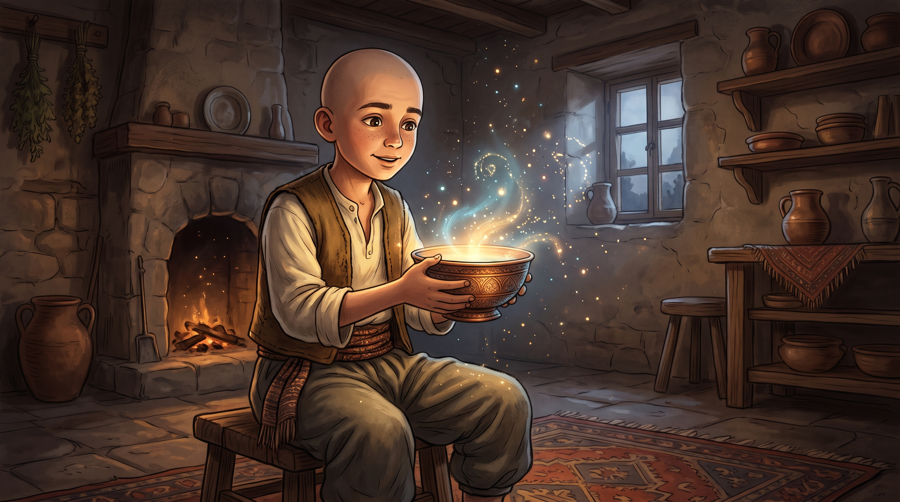
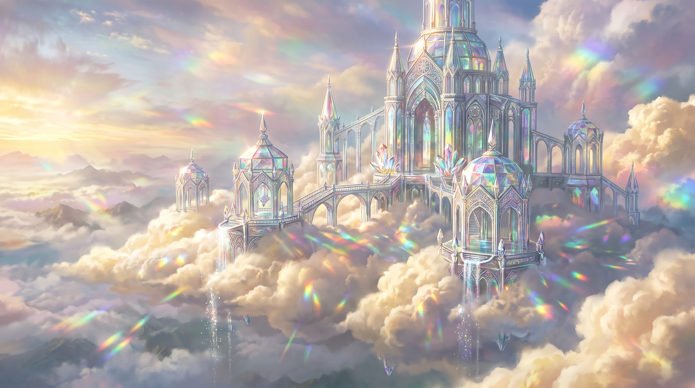
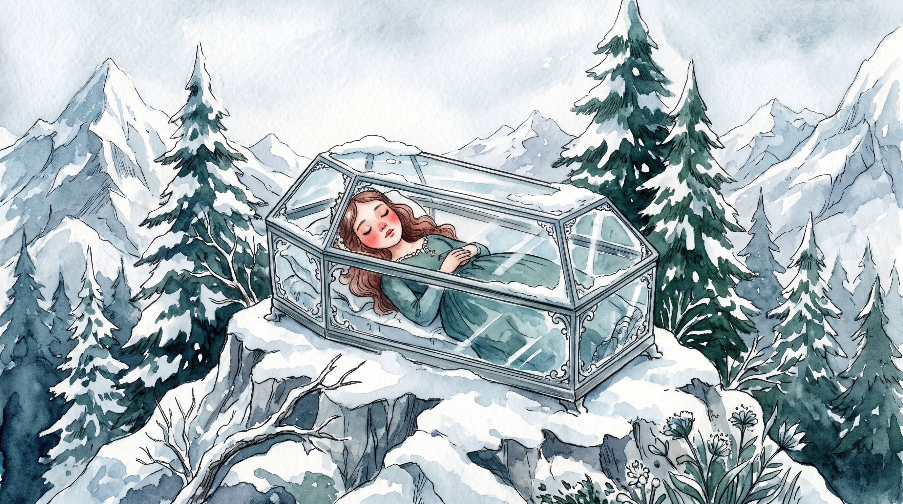
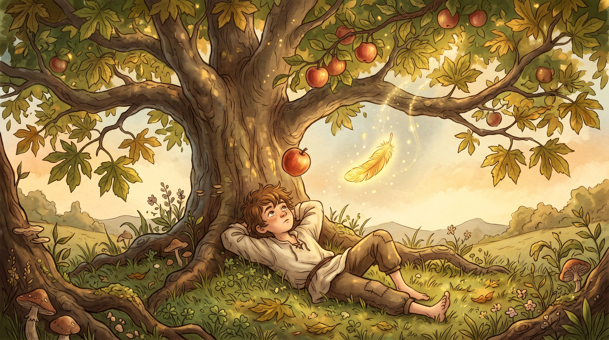
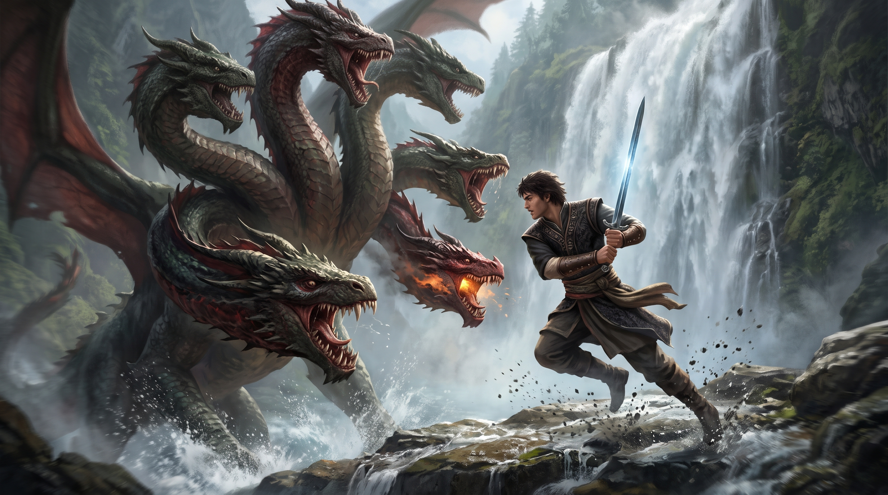
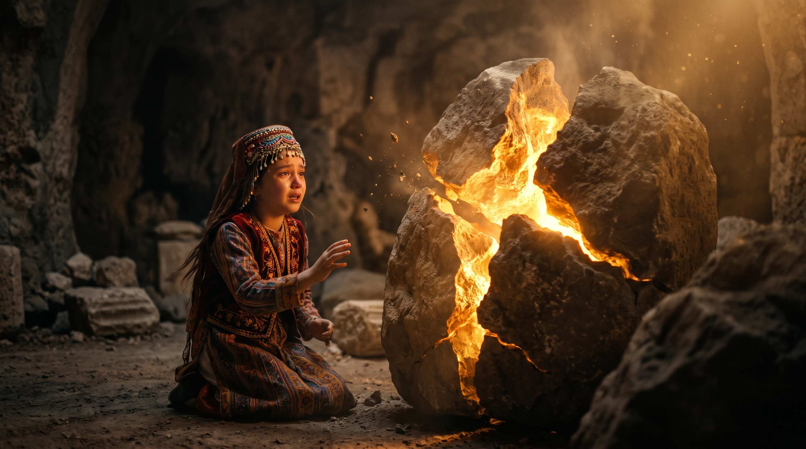
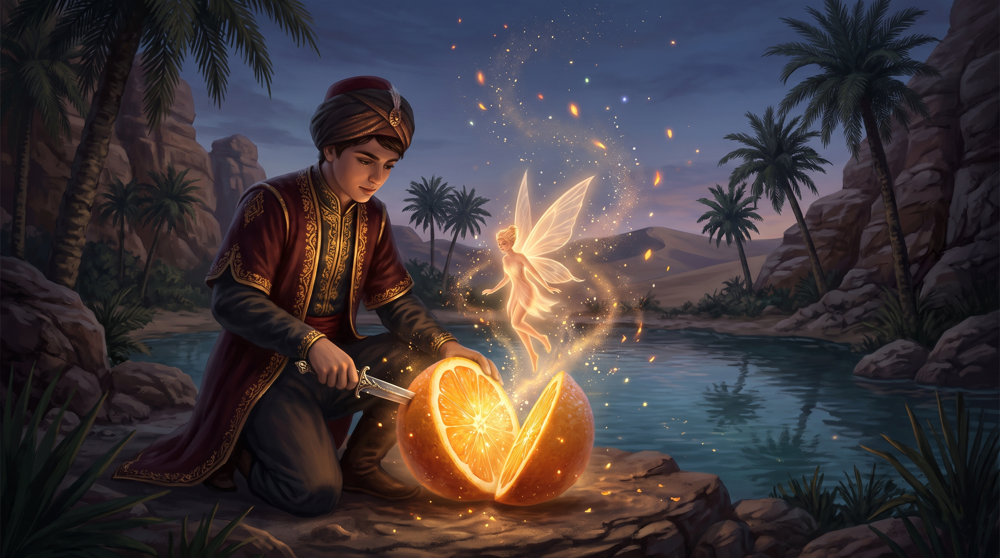
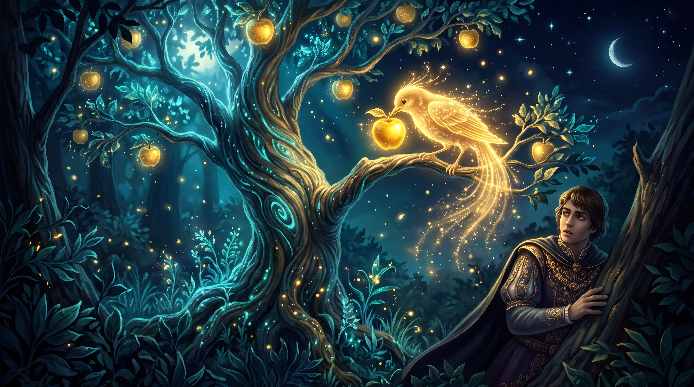

Keloğlan ve Sihirli Tas
Tür: Anadolu Masalı • Okuma Süresi: ~2 dk

Bir varmış, bir yokmuş. Evvel zaman içinde, kalbur saman içinde, develer tellal iken, pireler berber iken uzak mı uzak bir köyde yaşlı bir kadınla Keloğlan adında bir oğlu yaşarmış. Keloğlan'ın başı kelmiş ama aklı pek yamanmış; gelgelelim tembelliği her şeyin önüne geçermiş.
Günlerden bir gün annesi çok hastalanmış. Evde yiyecek bir lokma ekmek bile kalmamış. Keloğlan mecburen yerinden kalkıp ormana odun toplamaya gitmiş. Odun keserken baltası bir kayaya çarpmış ve kayanın altından parıl parıl parlayan eski bir tas yuvarlanarak ayaklarının dibine düşmüş. Tası eline alıp tozunu silmek için ovduğunda tasın içinden dumanlar yükselmiş ve kocaman bir cin ortaya çıkmış.
"Dile benden ne dilersen ey Keloğlan! İster saray, ister altın, söyle hemen yapayım!" diye gürlemiş cin.
Keloğlan önce korkmuş ama sonra açlık aklına gelince, "Bana mükellef bir sofra kur, anam da yesin, ben de yiyeyim!" demiş. Göz açıp kapayıncaya kadar sofra kurulmuş. Keloğlan tası alıp eve koşmuş. Annesini iyileştirmiş, köydeki yoksullara da gizli gizli yardım etmeye başlamış. Sihirli tas sayesinde kimse aç kalmamış.
Billur Köşk
Tür: Saray Masalı • Okuma Süresi: ~2 dk

Çok eski zamanlarda, uçsuz bucaksız dağların ardında, bulutların hemen altında sırça bir köşk varmış. Bu köşke Billur Köşk derlermiş. Köşkün her tarafı kristallerden, camlardan yapılmış; güneş vurduğunda gökkuşağı gibi yedi renk parlarmış.
Ülkenin padişahının küçük oğlu, bir gece rüyasında Billur Köşk'ü ve o sultanı görmüş. Uyanır uyanmaz yollara düşmeye karar vermiş. Babası gitmemesi için çok yalvarmış ama şehzade dinlememiş. Kaf Dağı'nın eteklerine vardığında devlerle karşılaşmış. Zekasını kullanarak devleri birbirine düşürmüş ve yola devam etmiş.
Sonunda Billur Köşk'e ulaşmış. Sultan, onun cesaretini test etmek için ona zor bilmeceler sormuş. Şehzade, yolda karşılaştığı dervişin verdiği öğütleri hatırlayarak bilmeceleri bir bir çözmüş.
"Aklın kılıcından keskindir ey şehzade, bu köşkün kapıları sana sonsuza dek açıktır!" demiş Sultan.
Sultan onun zekasına ve cesaretine hayran kalmış. Kırk gün kırk gece süren bir düğünle evlenmişler ve Billur Köşk'te sonsuza dek mutlu yaşamışlar.
Nardaniye Hanım
Tür: Anadolu Masalı • Okuma Süresi: ~2 dk

Vaktiyle bir padişahın Nardaniye adında, nar gibi kırmızı yanaklı, incecik boylu bir kızı varmış. Nardaniye Hanım o kadar güzel ve iyi kalpliymiş ki bütün saray halkı onu el üstünde tutarmış. Fakat annesi ölünce padişahın evlendiği yeni kraliçe, Nardaniye'yi fena halde kıskanırmış.
Kraliçe sihirli aynasına her sabah, "Söyle bana ey ayna, benden güzeli var mı bu dünyada?" diye sorar, ayna da hep "Nardaniye Hanım senden güzel" dermiş.
Öfkesinden deliye dönen kraliçe, avcıyı çağırıp Nardaniye'yi ormana götürmesini emretmiş. Avcı kıza kıyamamış, onu ormanın derinliklerine bırakıp dönmüş. Nardaniye günlerce aç susuz yürümüş, sonunda kırk haramilerin saklandığı bir mağara bulmuş. Haramiler bu güzel kızı görünce onu çok sevmiş.
Fakat zalim kraliçe kızın yaşadığını öğrenince kılık değiştirip Nardaniye'ye zehirli bir elma satmış. Kız elmayı ısırır ısırmaz uykuya dalmış. Haramiler onu camdan bir tabuta koyup dağın zirvesine bırakmışlar. Yıllar sonra oradan geçen komşu ülkenin şehzadesi tabutu taşırken askerlerden biri tökezlemiş, sarsıntıyla zehirli lokma dışarı fırlamış ve kız uyanmış.
Tembel Ahmet
Tür: Güldürücü Masal • Okuma Süresi: ~2 dk

Zamanın birinde, bir köyde Tembel Ahmet adında bir oğlan yaşarmış. Ahmet o kadar tembelmiş ki, güneş doğduktan batana kadar yerinden kalkmaz, annesi ona yemek yedirirken bile çiğnemekten yorulup uyuyakalırmış. Annesi, "Oğlum kalk bir işin ucundan tut" dedikçe, Ahmet "Off ana" der, yattığı yerden dönermiş.
Bir gün annesinin canına tak etmiş ve Ahmet'i kapı dışarı etmiş. Ahmet oflaya puflaya yürümüş, köyün dışındaki büyük çınar ağacının altına yatmış. "Ağzıma düş armut" diye beklerken, ağacın dalından parıl parıl parlayan altın bir kuş tüyü düşmüş. Tüyü aldığı anda gaipten bir ses duyulmuş:
"Ey Tembel Ahmet! Bu tüyle ne dilersen gerçek olacak ama unutma, sadece üç dilek hakkın var ve akılsızca dilenen dilek felaket getirir."
Ahmet önce sonsuz yemek, sonra yumuşacık bir yatak dilemiş. Ama yalnızlıktan canı çok sıkılmış. Üçüncü dileğinde, aklının başına gelmesini ve çalışkan biri olmayı dilemiş. Bir anda içini büyük bir çalışma hevesi kaplamış. Köye dönmüş ve köyün en çalışkan genci olmuş.
Yedi Başlı Ejderha
Tür: Kahramanlık Masalı • Okuma Süresi: ~2 dk

Bir ülkenin tek su kaynağı, büyük bir dağın ardındaki pınarmış. Ancak bu pınarın başını yedi başlı korkunç bir ejderha tutmuş. Ejderha suyu serbest bırakmak için her ay köyden bir kurban istermiş. Köylüler çaresizlik içinde her ay kura çeker, kurbanı ağlayarak ejderhaya yollarlarmış.
Köyün yiğit ve akıllı genci Ali, bu zulme son vermeye yemin etmiş. Demirci ustasına gidip yedi gün yedi gece dövülmüş, çok keskin bir kılıç yaptırmış. Ejderhanın mağarasına vardığında, canavar alevler saçarak üzerine atılmış. Ali kıvrak hareketlerle ejderhanın başlarını kesmiş ama yerine yenileri çıkmış.
O an dedesinin sözü kulaklarında yankılanmış: "Yiğidim, ejderhanın başı zehir, kalbi ise taştır. Gücü başında değil, göğsündeki parlayan kızıl puldadır!"
Ali kılıcını ejderhanın boynuna değil, göğsüne doğru saplamış. Canavar korkunç bir çığlık atarak taş kesilmiş. Sular coşkuyla akmaya başlamış. Ali köye döndüğünde halk onu omuzlarında taşımış ve ülke sonsuza dek ejderha korkusu olmadan huzur içinde yaşamış.
Sabır Taşı
Tür: Anadolu Masalı • Okuma Süresi: ~2 dk

Büyük bir konakta, yapayalnız yaşayan, dertlerini kimseye anlatamayan genç ve güzel bir kız varmış. Kızın hayatı dışarıdan mükemmel görünse de içeride büyük acılar çekiyormuş. Babası onu zalim bir üvey anneyle baş başa bırakıp uzun bir yolculuğa çıkmış. Kızcağız her gün eziyet görür ama şikayet etmezmiş.
Bir gün pazara giden hizmetçisine, "Bana bir sabır taşı ile bir sabır bıçağı al" demiş. Hizmetçi taşı ve bıçağı getirmiş. Kız her gece odasına kapanır, sabır taşını önüne koyar ve bütün yaşadığı zulmü, haksızlığı ağlayarak taşa anlatırmış. Sonra sabır bıçağını taşa saplayıp şöyle dermiş:
"Ben mi dayanayım, yoksa sen mi dayanaksın ey taş? İnsanın kalbi çatlar da dile gelmez, senin taş bağrın bu derde nasıl dayansın?"
Günler ayları kovalamış. Bir gece sabır taşı kızın derdine dayanamayıp ortadan ikiye çatlamış. O sırada kapının arkasından olanları dinleyen babası, kızının ne büyük acılar çektiğini anlamış. Zalim üvey anneyi evden kovmuş, kızıyla birlikte mutlu ve huzurlu bir hayata başlamışlar.
Üç Turunçlar
Tür: Olağanüstü Masal • Okuma Süresi: ~2 dk

Padişahın evlilik çağına gelmiş oğlu hiçbir kızı beğenmiyor, evlenmek istemiyormuş. Bir gün ormanda avlanırken yaşlı bir periye denk gelmiş. Peri şehzadeye pırıl pırıl parlayan üç turunç vermiş.
"Al bunları yiğidim," demiş peri, "Ama sakın ola ki bir yudum suyun olmadığı kurak bir yerde bunları kesme. Yoksa ömrün boyunca pişmanlık ateşiyle yanarsın."
Şehzade yola koyulmuş. Çölün ortasındayken meraktan dayanamayıp turunçlardan birini kesmiş. İçinden ayın on dördü gibi güzel bir kız çıkmış ve "Su!" diye inleyerek susuzluktan ölmüş. İkinci turunçta da aynı acı sonu yaşamış. Şehzade artık çok dikkatliymiş.
Son turuncu büyük bir pınarın başına geldiğinde kesmiş. İçinden çıkan dünya güzeli kıza hemen pınardan su içirmiş. Kız canlanmış, ona gülümsemiş. Şehzade kızı alıp saraya götürmüş. Yolda kötü kalpli bir cadı kıza tuzak kursa da, büyü bozularak kız eski haline dönmüş ve şehzadesine kavuşmuş.
Altın Bülbül
Tür: Hayvan Masalı • Okuma Süresi: ~2 dk

Padişahın sarayının bahçesinde sadece altından elmalar veren sihirli bir ağaç varmış. Ancak son zamanlarda her gece bu elmalardan biri kayboluyormuş. Küçük şehzade uyumamak için gözlerine tuz basmış ve gece yarısı elmayı çalanın ışıl ışıl parlayan bir Altın Bülbül olduğunu görmüş.
Şehzade okunu atmış ama sadece bülbülün altın bir tüyünü düşürebilmiş. Padişah bu tüyü görünce bülbülü canlı istemiş. Şehzade yollara düşmüş. Ormanda karşılaştığı konuşan bir kurda yardım etmiş. Kurt, vefa borcunu ödemek için ona rehberlik etmiş.
"Gideceğin yol çetindir şehzadem," demiş Kurt, "Gözünü dört aç, devlerin sarayına girdiğinde ne altın ata ne de zümrüt kafese dokun, sadece bülbülü al ve çık!"
Şehzade kurdun aklı sayesinde sadece Altın Bülbül'ü değil, dünyanın en güzel prensesini de alıp ülkesine dönmüş. Kıskanç abileri yolda ona tuzak kursalar da kurt onu yine kurtarmış. Saraya dönen şehzade prensesle kırk gün kırk gece süren bir düğün yapmış.